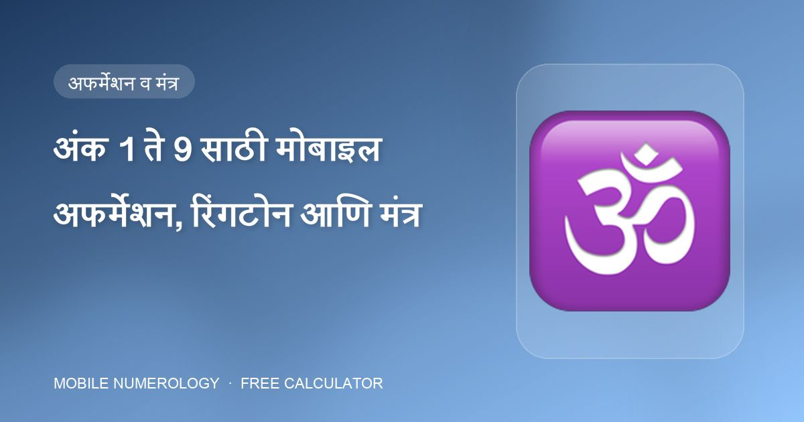

अंक 1 ते 9 साठी मोबाइल अफर्मेशन, रिंगटोन आणि मंत्र

अंक केवळ दृश्य नाहीत. अॅडव्हान्स मोबाइल न्यूमरॉलॉजी क्लास एक ध्वनी स्तर जोडतो: फोन उचलण्यापूर्वी म्हणण्याचे अफर्मेशन, तुमच्या अंकाच्या ग्रहाशी जुळणारी रिंगटोन शैली, आणि ग्रहाचा बीज मंत्र. इथे अंक 1 ते 9 ची संपूर्ण यादी आहे. आधी तुमचा मूलांक वापरा; भाग्यांक वेगळा असेल तर आळीपाळीने.
1 — सूर्य
"माझी प्रत्येक सकारात्मक कृती मला अधिकाधिक यशाकडे नेते." · "मी आत्मविश्वास व विवेकाने संवाद साधतो/साधते."
रिंगटोन: प्रभावी प्रेरणादायी भाषण, ड्रम बीट्स. मंत्र: ॐ सूर्याय नमः.
2 — चंद्र
"मी माझा भूतकाळ सोडून चांगल्या भविष्याकडे पुढचे पाऊल टाकण्यास तयार आहे." · "मी स्पष्टता व आंतरिक शांततेने बोलतो/बोलते."
रिंगटोन: बासरीचे शांत संगीत, निसर्गाचे आवाज. मंत्र: ॐ चंद्राय नमः.
3 — गुरू
"व्यत्यय व विचलने दूर करून मी सहज माझी एकाग्रता व विश्वास टिकवतो/टिकवते." · "मी शहाणपण व अर्थपूर्ण नाती आकर्षित करतो/करते."
रिंगटोन: मंदिराच्या घंटा, शास्त्रीय संगीत. मंत्र: ॐ बृं बृहस्पतये नमः.
4 — राहू
"जे बदलणे माझ्या शक्तीबाहेर आहे ते मी स्वीकारून सोडून देतो/देते." · "मी स्थिर व संतुलित आहे आणि सकारात्मक बदल आकर्षित करतो/करते."
रिंगटोन: इलेक्ट्रॉनिक बीट्स, ध्यान किंवा मृदू स्वर. मंत्र: ॐ रां राहवे नमः.
5 — बुध
"मी सर्व काही एकटा/एकटी करू शकत नाही. माझ्या ध्येयाच्या प्रवासात मिळणारी इतरांची मदत मी स्वीकारतो/स्वीकारते." · "मी स्पष्टपणे व्यक्त होतो/होते आणि समृद्धी आकर्षित करतो/करते."
रिंगटोन: वेगवान बीट्स, उत्साहवर्धक सूर. मंत्र: ॐ बुं बुधाय नमः.
6 — शुक्र
"मी माझ्या वेळेचा प्रभावी वापर करेन. जे मला माझ्या ध्येयांकडे पुढे नेतात अशा लोकांशी बोलण्यावर मी लक्ष केंद्रित करेन." · "मी प्रेम व संतुलनाने संवाद साधतो/साधते."
रिंगटोन: रोमँटिक किंवा शास्त्रीय वाद्यसंगीत. मंत्र: ॐ शुं शुक्राय नमः.
7 — केतू
"माझा दिवस एकांत चिंतन, अर्थपूर्ण मैत्री व दृढ उद्देश यांचा परिपूर्ण समतोल आहे." · "मी जोडलेला/जोडलेली, अंतर्ज्ञानी व माझ्या संवादात स्पष्ट आहे."
रिंगटोन: वैश्विक ध्वनी, तिबेटी घंटा. मंत्र: ॐ कें केतवे नमः.
8 — शनी
"नियंत्रणाची गरज नाही. सर्व काही जसे व्हायचे तसेच होईल यावर माझा विश्वास आहे." · "प्रत्येक कॉल मला प्रगती व स्थैर्य देतो."
रिंगटोन: गंभीर मंत्रोच्चार, संथ ध्यान बीट्स. मंत्र: ॐ शं शनैश्चराय नमः.
9 — मंगळ
"माझे सध्याचे स्वप्न साकार होताच मी लगेच पुढच्यावर काम सुरू करतो/करते. मी जे करतो/करते ते सर्व माझ्या जीवनाच्या मोठ्या दृष्टिकोनाला आधार देते." · "मी शक्ती व सकारात्मकतेने व्यक्त होतो/होते."
रिंगटोन: ड्रम बीट्स, उच्च-ऊर्जा वाद्ये. मंत्र: ॐ अं अंगारकाय नमः.
सराव कसा करावा
- रिंगटोन एकदा सेट करा — फोन वाजतो तेव्हा ती प्रत्येक वेळी निष्क्रियपणे काम करते.
- फोन वाजत असताना, उत्तर देण्यापूर्वी, अफर्मेशन मनात म्हणा. त्याला तीन सेकंद लागतात आणि कॉलची चौकट बदलते.
- सकाळी मंत्राचा 11 किंवा 21 वेळा जप करा; काही लोक तो अलार्म टोन म्हणून ठेवतात.
30 सेकंदांत तुमचा नंबर तपासा
आमचा मोफत कॅल्क्युलेटर तुमच्या मोबाइल नंबरची सर्व 10 स्थाने तपासतो, तुमचा मूलांक व भाग्यांक काढतो आणि शुभ पिन, पासवर्ड, वॉलपेपर व कव्हर सुचवतो — तुम्ही जे टाकता ते तुमच्या ब्राउझरबाहेर जात नाही.
वारंवार विचारले जाणारे प्रश्न
मूलांकाचे की भाग्यांकाचे अफर्मेशन वापरावे?
मूलांकापासून सुरुवात करा, जो तुमचा स्वभाव दर्शवतो. ज्या दिवशी तुम्ही दीर्घकालीन ध्येयांवर काम करत असाल त्या दिवशी भाग्यांकाचे अफर्मेशन वापरा.
गुरूशिवाय हे मंत्र वापरता येतील का?
सूचीबद्ध बीज मंत्र साधी ग्रह वंदना आहेत ("ॐ, सूर्याला नमन") आणि दीक्षेशिवाय व्यापकपणे जपले जातात. ते हळू व आदराने उच्चारा.
रिंगटोनचा आवाज किंवा लांबी महत्त्वाची आहे का?
क्लास साहित्यात नाही. तुम्हाला ऐकायला आवडेल अशी आवृत्ती निवडा — मुद्दा हा की ध्वनी ग्रहाच्या मूडशी जुळावा.